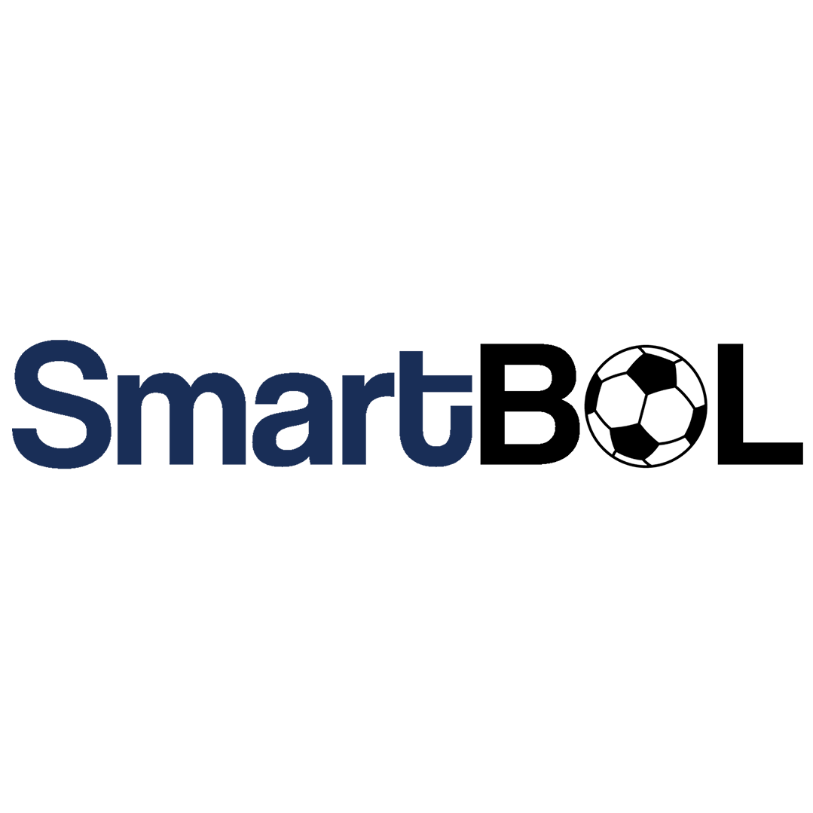

<section class="h-100 gradient-custom-2">
    <div class="container h-100">
      <div class="row d-flex justify-content-center align-items-center h-100">
        <div>
          <div class="card">
            <div>
                <div class="card-body text-black pt-3">
                    <div class="mb-1">
                      <div class="p-4" style="background-color: #f8f9fa;">

                        <ul>
                                <a class="list-group-item flex-row align-items-start">
                                    <div class="d-flex w-100 justify-content-left">
                                        
                                            <div class="px-2 justify-content-left">
                                                <h4 class="mb-1">SmartBOL</h4>
                                                <p class="mb-1">Cofundador 2019 - Actualidad <br>
                                                    Mi trabajo fue adaptándose mientras más gente se fue sumando al proyecto, centrándome en la actualidad en la creación de contenido, tanto en posts para redes sociales como Instagram y Twitter, como también la creación y dirección de videos para YouTube. Junto con esto fui responsable de la creación y el mantenimiento de la web de la empresa, tanto la parte funcional como también lo visual.</p>
                                            </div>
                                    </div>
                                </a>
                        </ul>

                      </div>
                    </div>
                  </div>
            </div>
          </div>
        </div>
      </div>
    </div>
  </section>
